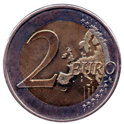
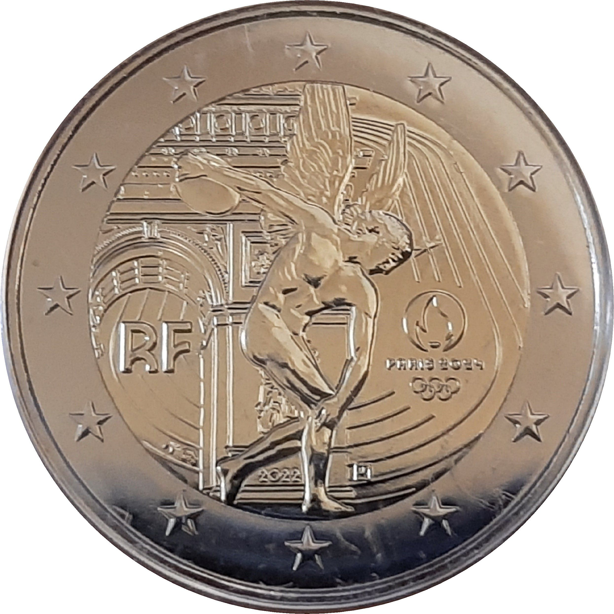
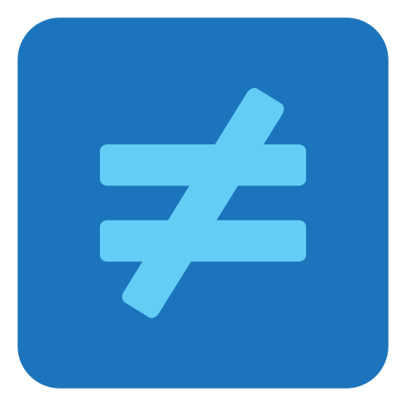

Dénombrement (revoir les attendus)
-
Si on lance deux fois de suite une pièce de monnaie, en tenant compte de l'ordre, combien y a-t-il d'issues possibles ?
Une issue est un résultat possible, par exemple pile puis face et face puis pile sont considérées comme des issues différentes.
   -
Si on lance deux fois de suite une pièce de monnaie, sans tenir compte de l'ordre, combien y a-t-il d'issues possibles ?
Une issue est un résultat possible, par exemple pile puis face ou face puis pile sont considérées comme des issues identiques.

-
Si on lance simultanément (en même temps) deux pièces de monnaie indiscernables (par exemple 2 pièces neuves d'une valeur de 1 euro), combien y a-t-il d'issues possibles ?
Une issue est un résultat possible, par exemple pile et face.
-
Si on lance deux fois de suite une pièce de monnaie, en tenant compte de l'ordre, la probabilité d'obtenir pile (d'abord) puis face (ensuite) est :
-
Si on lance deux fois de suite une pièce de monnaie, sans tenir compte de l'ordre, la probabilité d'obtenir pile (d'abord) puis face (ensuite) est :